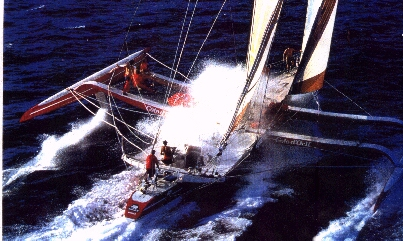

Côte d'Or 2Campagne de mesures
|
 |
|
|
Ce document analyse et commente les résultats de la campagne de mesures effectuées à bord de Côte d'Or 2 du 14 au 22 mai 1987, en préparation de la Course autour de l'Europe de la même année. |
| Méthode | Top of Page |
Le but de cette campagne était de déterminer l'efficacité des foils et l'intérêt de leur volet de courbure. Il a donc été décidé d'élaborer des polaires de vitesse lors d'essais en mer.
| Acquisition à bord | Top of Section |
Un ordinateur (EPSON PX-8) a été interfacé avec la centrale NKE du bord afin d'effectuer des saisies en temps réel. Ces saisies comprenaient :
TWS = [AWS2 + BSP2 - 2*BSP*AWS*cos(AWA)]1/2
TWA = arctg[AWS*sin(AWA) / (AWS*cos(AWA) - BSP)]
VMG = BSP*cos(TWA)
\( TWS = [AWS^2 + BSP^2 - (2 \times BSP \times AWS \times cos(AWA))]^{1 \over 2} \)
\( TWA = arctg[AWS \times sin(AWA) / (AWS \times cos(AWA) - BSP)] \)
\( VMG = BSP \times cos(TWA) \)
| Lissage des données et élaboration des polaires | Top of Section |
On choisit donc un vent réel de référence (TWSref), et on dressera la polaire des vitesses du bateau pour celui-ci.
On détermine ensuite la largeur de la fourchette de vent réel. On a pris une largeur de 5 nœuds pour cette campagne.
On extrapole ensuite de manière linéaire sur l'intervalle, les points de polaires pour les amener au vent réel de référence par la formule suivante :
BSPTWSref = BSP * (TWSref / TWS)
\( BSP_{TWSref} = BSP \times {TWS_{ref} \over TWS} \)
Les points de polaire ainsi obtenus sont portés sur le graphique,et les coefficients du polynôme d'extrapolation sont calculés par la méthode des moindres carrés.
| P | TWA | = P | x |
| BSP | y |
\( P_{BSP}^{TWA} = P_y^x \)
TWA is x, BSP is y.
On cherche les coefficients a, b, c et d d'un polynôme pour lequel
ax2 + bx + c
\( ax^2 + bx + c \)
est le plus proche possible de y, c'est à dire que la somme
ax2 + bx + c - y
\( (ax^2 + bx + c) - y \)
soit la plus petite possible, donc, que pour tous les points mesurés de la polaire, le carré de cette différence soit le plus proche possible de zéro (on élève au carré pour supprimer le signe), et donc que le cumul de ces différences soit en définitive la plus petite possible. Ceci revient à calculer les coefficients a, b et c pour lesquels la derivée première de cette sommation des carrés des différences par rapport à chacun des a, b et c est nulle :
([Σ(ax2 + bx + c - y)]2)' = 0
\( ([\sum (ax^2 + bx + c - y)]^2)' = 0 \)
On développe avant de dériver :
S = a2Σx4 + 2abΣx3 + 2acΣx2 - 2aΣyx2 +
b2Σx2 + 2bcΣx - 2bΣyx +
c2Σx0 - 2cΣy + Σy2
\( S = a^2 \sum x^4 + 2ab \sum x^3 + 2ac \sum x^2 - 2a \sum yx^2 + b^2 \sum x^2 + 2bc \sum x - 2b \sum yx + c^2 \sum x^0 - 2c \sum y + \sum y^2 \)
On dérive l'expression ainsi obtenue
|
∂S
--- = ∂a |
2aΣx4 + 2bΣx3 + 2cΣx2 - 2Σyx2 = 0 |
\( {{\partial S} \over {\partial a}} = 2a \sum x^4 + 2b \sum x^3 + 2c \sum x^2 + 2 \sum yx^2 = 0 \)
|
∂S
--- = ∂b |
2aΣx3 + 2bΣx2 + 2cΣx1 - 2Σyx1 = 0 |
\( {{\partial S} \over {\partial b}} = 2a \sum x^3 + 2b \sum x^2 + 2c \sum x^1 + 2 \sum yx^1 = 0 \)
|
∂S
--- = ∂c |
2aΣx2 + 2bΣx1 + 2cΣx0 - 2Σyx0 = 0 |
\( {{\partial S} \over {\partial c}} = 2a \sum x^2 + 2b \sum x^1 + 2c \sum x^0 + 2 \sum yx^0 = 0 \)
| | a, b, c | = | | | Σx4 | Σx3 | Σx2 | | -1 | * | | | Σyx2 | | |
| | | Σx3 | Σx2 | Σx1 | | | | | Σyx1 | | | ||
| | | Σx2 | Σx1 | Σx0 | | | | | Σyx0 | | |
\( \begin{vmatrix} a & b & c \end{vmatrix} = \begin{vmatrix} \sum x^4 & \sum x^3 & \sum x^2\\ \sum x^3 & \sum x^2 & \sum x^1\\ \sum x^2 & \sum x^1 & \sum x^0 \end{vmatrix}^{-1} \times \begin{vmatrix} \sum yx^2\\ \sum yx^1\\ \sum yx^0 \end{vmatrix} \)
Remarque : Les termes Σx0 représentent le nombre de mesures dans la courbe à lisser.Le travail de l'ordinateur lors du lissage consiste donc à inverser la matrice carrée Σx0->2n (\( \sum x^{0->2n} \)) et à la multiplier par la matrice colonne Σyx0->n (\( \sum yx^{0->n} \)) pour obtenir la matrice ligne des coefficients du polynôme recherché.
Pour nos polaires, un polynôme du 4e degré convient.
Les courbes sont donc determinées de 0 à 180°. Il est évident que nous n'avons pas de mesures dans l'angle mort, aussi, pour l'homogénéité du travail de l'ordinateur, il existe systématiquement dans les fichiers un point de coodonnées (0, 0). Les équations de nos polaires sont donc de la forme :
y = f(x) = ax4 + bx3 + cx2 + dx + e
\( y = f(x) = ax^4 + bx^3 + cx^2 + dx + e \)
Les deux VMG, au près et au portant, sont donc les extrema de la fonction
f(x) * cos(x)
\( f(x) \times cos(x) \)
à savoir les racines de
[f(x) * cos(x)]'
\( [f(x) \times cos(x)]' \)
et la vitesse maximum est calculée comme étant la racine de f'(x).Rien de particulier ici, il s'agit juste d'un polynôme. Ses coefficients sont les éléments de la matrice ligne obtenue ci-avant.
| Courbes de Synthèse | Top of Page |
Faut que je cherche...
| Commentaires | Top of Page |
Plus tard...